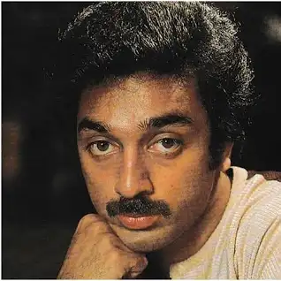
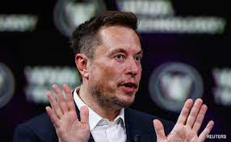
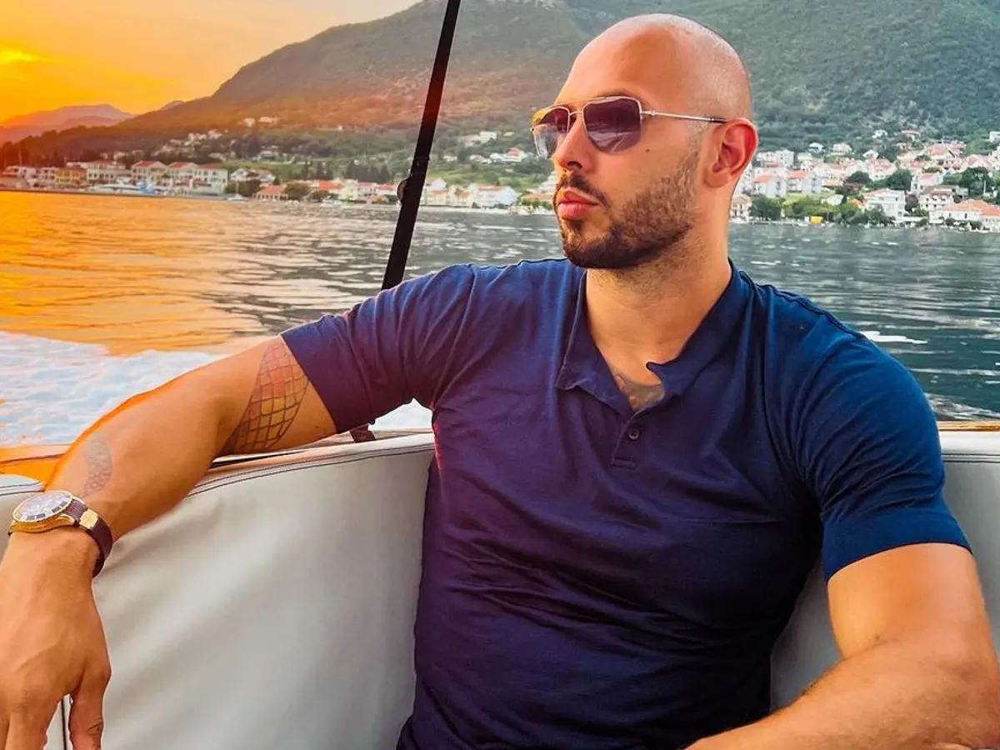

1.KAMAL HASSAN |
|
|  | Kamal Haasan (born Parthasarathy Srinivasan on 7 November 1954)[4] is an Indian actor, filmmaker, screenwriter, playback singer, television presenter, social activist and politician who works mainly in Tamil cinema. Besides Tamil, he has also appeared in some Malayalam, Hindi, Telugu, Kannada and Bengali films. Considered one of the finest actors in Indian cinema, Haasan is also known for introducing many new technologies and cosmetics to the Indian film industry.[5][6][7] He has won numerous accolades, including Four National Film Awards, Nine Tamil Nadu State Film Awards, Four Nandi Awards, One Rashtrapati Award, Two Filmfare Awards and 17 Filmfare Awards South. He was awarded the Kalaimamani Award in 1984, the Padma Shri in 1990, the Padma Bhushan in 2014 and the Ordre des Arts et des Lettres (Chevalier) in 2016. |
2.ELON MUSK |
|  | A member of the wealthy South African Musk family, Elon was born in Pretoria and briefly attended the University of Pretoria before immigrating to Canada at age 18, acquiring citizenship through his Canadian-born mother. Two years later, he matriculated at Queen's University at Kingston in Canada. Musk later transferred to the University of Pennsylvania, and received bachelor's degrees in economics and physics. He moved to California in 1995 to attend Stanford University. However, Musk dropped out after two days and, with his brother Kimbal, co-founded online city guide software company Zip2. The startup was acquired by Compaq for $307 million in 1999, and, that same year Musk co-founded X.com, a direct bank. X.com merged with Confinity in 2000 to form PayPal. |
3.ANDREW TATE |
|  | is controversial commentary has resulted in suspension from various social media platforms[4] and concern from advocacy groups, charities, non-profit organisations, teachers, parents, mental health experts, as well as UK counter-terror police. Surveys have found that most Britons have heard of Tate, who is viewed favourably among many young men, considered influential, and has been dubbed the "king of toxic masculinity" by multiple media outlets,[5] as part of the "manosphere".[6] With appearances on conspiracy news site InfoWars, Tate has been described as a right-wing and far-right influencer, and has described himself as "absolutely" misogynistic and sexist. In August 2023, it was estimated that Tate's online ventures generated US$5 million in revenue per month. As of December 2023, Tate had over 8.5 million followers on X (formerly Twitter), he was the third-most "googled" person in 2023 and his Wikipedia article, with 12.7 million views, ranked among the top 25 English Wikipedia articles. |